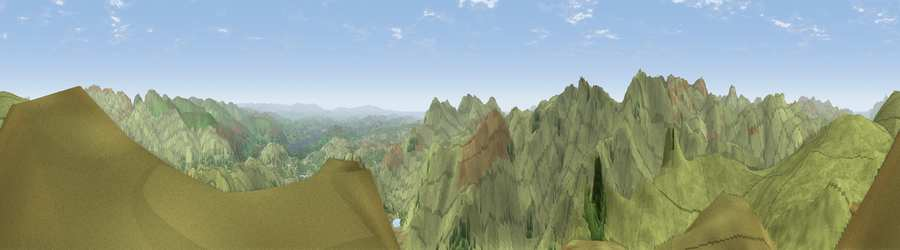

Viewpoint near Chapel Stile
#2333 in England · top 19% of its area beats it · near Chapel StileWhere it is
The exact computed spot (NY 28162 07375). Click the marker for map links.
The view, rendered

A 360° render of this exact spot computed from the terrain model, tree cover and land cover — summer colours, afternoon light, calibrated against photographs of famous viewpoints. Real trees, hedges and buildings will differ in detail.
The panorama
Grey silhouette: terrain skyline in each direction (720 bearings, Earth curvature and refraction included). Dashed green: skyline with trees (+15 m) and buildings (+8 m) as obstacles. Blue strip: how far the ground is visible on each bearing.
Where the view opens
Wedge length = distance to the farthest visible ground on that bearing (vegetation-aware). Rings at 10, 25 and 50 km.
What fills the view
92% grassland · 7% woodland
Angular shares of the visible panorama (visual magnitude), not map area. Landscape diversity 0.13 (0–1 Shannon).
Key numbers
More beautiful places nearby
The staircase of upgrades: each row has a higher view potential than everything closer. Driving times are estimates from straight-line distance, calibrated against real road routing — check an actual route before setting out.
| Place | Direction | Drive | Score |
|---|---|---|---|
| High Raise | N · 2 km | ~6 min | 76.2 |
| Bowfell North Top | W · 4 km | ~9 min | 81.5 |
| Viewpoint c10128_6489 | WSW · 4 km | ~9 min | 82.7 |
| Broad Crag | W · 6 km | ~13 min | 83.1 |
| Scafell Pike | W · 7 km | ~14 min | 83.9 |
| Symonds Knott | W · 8 km | ~15 min | 84.1 |
| Old Man of Coniston | S · 10 km | ~19 min | 85.2 |
| Illgill Head | WSW · 12 km | ~22 min | 88.4 |
54.45666, -3.10959 · source: screening · position refined by local search. Computed location — check access rights before visiting.